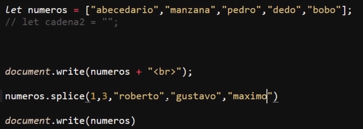
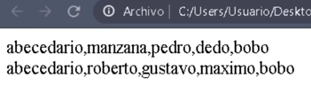

Este metodo permite eliminar y añadir datos al array al mismo tiempo, para lo cual el metodo necesita que se definana varios datos.
Los dos primeros del metodo se tratan de datos numericos de los cuales el primero corresponde a la posición del array en donde se aplicaran los datos(inclutendo el dato en esa posición) mientras que el segundo numero corresponde a la cantidad de datos que seran eliminados del array, para eliminar datos este metodo empieza a recorrer el array desde la posición indicada en el primer dato el numero de posiciones indicadas en el segundo dato, por lo tanto si no se desea eliminar nungun dato basta con indicar el segundo dato del metodo como "0" ("0" datos a eliminar).
Por otro lado para añadir datos al array basta con ingresarlos despues de los dos datos anteriores del metodo, cabe destacar que al ingresar datos tambien se tendra en cuenta la posición inicial (primer dato numerico)por lo que los nuevos datos se ingresaran apartir de esa posición, desplazando los viejos o remplazandolos en el caso de que se hayan definido para que sean eliminados (segundo dato numerico), de este modo se puede añadir nuevos datos a la vez que se eliminan los antiguos.
En otra palabra este metodo permite eliminar e ingresar datos al array al mismo tiempo, asi como elejir la posición en la que esta modificación se hara.
Ejemplo

Resultado

En este ejemplo el array "numeros" posee varios valores, los cuales se imprimen en pantalla, luego se aplica el metodo "splice" indicando que los cambios se realizaran a partir del segundo dato (1), tambien se indica que se eliminaran los siguientes tres(3) puestos apartir de este y luego se definen los nuevos datos que seran ingresados en el array, luego de ejecutar el metodo se imprime en pantalla el nuevo valor del array, de ese modo los valores de la posición dos (1) a la cuatro(3) son remplazados por los nuevos datos.
Nota:No es necesario ingresar datos a la vez que otros son eliminados, si unicamente se desea aliminar datos sinplemten no se define ningun dato para que sea ingresado, a su vez si no se desea eliminar ningun dato vasta con colocar el segundo dato numerico en cero (0) y de finir los datos a ingrsar, de ese modo solo si ingresaran datos pero ninguno se eliminara.
Nota: para ingresar los datos al principo basta con colocar el primer dato numerico del metodo(posición de los cambios) en cero(0) pero por otro lado si se dea ponerlos en ultima posición este metodo siempre desplaza el ultimo elemento y lo ubica despues de los datos ingresados, por lo que para ingresar datos al ultimo el metodo "push" es mejor opción